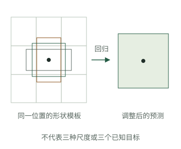
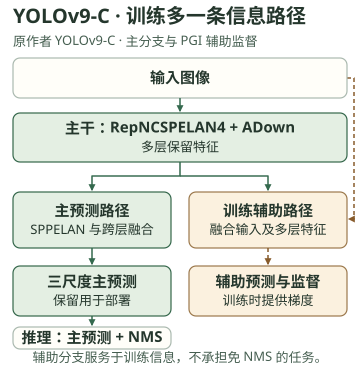
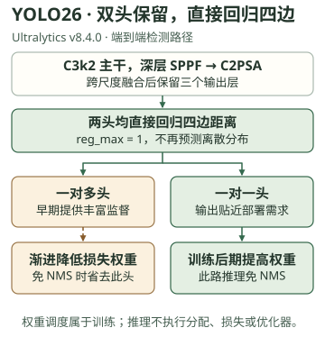
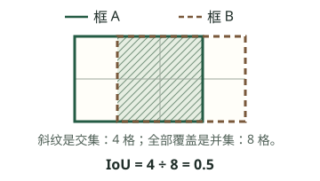

YOLO · 整体框架
一张图，
怎样变成检测结果？
目标检测的核心目标是找到图中的目标，并确定它们的类别和位置。特征提取、特征融合、预测与筛选，都是为了辅助达到这个目的。
图解以 YOLOX 式三尺度、Anchor-free 检测器为参照，先串起训练与推理。它不代表所有 YOLO 的逐层实现。图中图像、特征、框和分数均为教学示意，未运行真实模型。
演进索引补充至 YOLO26，限定常规水平框检测。先看相对稳定的职责，再按问题对照不同分支；不将所有同名版本视为统一继承链，也不作性能排名。
带点线的词可悬停查看释义；点按可固定，再点一次或按 Esc 收起。
先定位整个系统
YOLO 相对稳定的是检测范式，
不是一套始终不变的积木。
初代 YOLO 把完整图像直接映射为框和类别预测。后续许多分支继续围绕单阶段、密集预测和实时检测展开：共享图像特征，再从多个预测位置输出目标信息。它们不需要先独立提出候选区域，再逐区域分类。
这些特征并非 YOLO 独有，也不足以给所有同名模型下严格定义。YOLO 已经形成多个团队的技术分支，名称和版本号不能当作一条完整的继承链。初代的全连接输出头，也不能直接等同于后来常见的多尺度检测头。初代论文 §2
推理：从图像到目标列表
图像 → 特征提取 → 特征融合 → 检测头 → 解码与结果选择
主干 Backbone 提取特征，融合部分 Neck 组织跨层信息，检测头 Head 输出预测。是否需要 NMS，取决于训练与输出设计。
训练：让预测逐渐满足监督
预测 + 真实标注 → 样本分配 → 损失 → 反向传播 → 优化器更新参数
实际先后与实现有关：分配也可能读取已解码的预测。训练分支、损失和优化器通常不随模型一同进入部署推理。
这是现代常见 YOLO 的职责分解，不要求源码必须把 Backbone、Neck、Head 分成三个类；初代也不能强行套入今天的每个模块名称。三尺度、Anchor、独立目标置信度、DFL 和 NMS 都不是所有 YOLO 必须保留的定义。
六条主线 · 总览负责定位，专题负责展开
先确定在解决什么问题，
再进入具体模型。
- 特征提取与多尺度融合
图像信息如何被采样、表达和组织？设计原理与结构图
- 预测头与边界框表示
- 样本分配与任务对齐
谁负责学习哪个 GT？监督机制 · SimOTA / TAL
- 损失与训练监督
- 重复预测与 NMS-free
- 精度、效率与场景适配
六条主线是阅读同一系统的不同角度，不是六条互不相干的升级链。完整模型仍需把它们放回同一次训练与推理。
把版本放回它要解决的问题
保留的是检测目标，
变化的是达成目标的方式。
这张表按问题组织，而不是把型号排成单向升级链。同一个模型可以同时改动多个环节，一项机制也可以被不同团队采用。
窄屏可左右滚动查看完整对照。
| 原来的问题 | 代表性方向 | 核心改变 |
|---|---|---|
| 怎样统一定位与分类？ | 初代 YOLO | 整图经过卷积与全连接层，输出单个网格组织的框、置信度和共享类别。按中心与格内当前 IoU 分配监督；推理仍可使用 NMS。 |
| 怎样处理不同尺度与框形状？ | YOLOv2 / v3 | 引入先验框；v3 在多个尺度预测并融合层级特征。各层没有严格的小、中、大目标独占关系。 |
| 哪些位置应该学习哪个目标？ | YOLOv5、YOLOX、v8 等 | 从几何匹配到结合预测质量的 SimOTA、任务对齐分配（TAL）；解耦头、Anchor-free 与样本分配是不同改动。 |
| 怎样保留信息并控制执行成本？ | v4 / v6 / v7 / v9 / YOLO11 等 | 分别改进特征结构、训练信息或部署效率。v9 的可编程梯度信息（PGI）不等于更换优化器，YOLO11 的结构改动也不等于免 NMS。 |
| 丰富监督为什么留下重复输出？ | YOLOv10 | 一对多辅助训练，一对一服务推理，一致匹配协调两条路径，使部署不必再靠 NMS 去重。 |
| 免 NMS 之后还剩哪些训练与部署成本？ | YOLO26 | 在 YOLO11 结构基础上结合双分支，采用渐进损失、STAL 与 MuSGD，并移除 DFL。原有设计可以被替换，并非只做累加。 |
对应依据见版本索引与原始来源。NMS 是非极大值抑制；STAL 是小目标感知标签分配；DFL 是分布焦点损失，用于监督离散分布式框回归；MuSGD 是组合 Muon 与动量 SGD 的优化器。
版本号与团队分支：哪些不能当成直接前后代？
原始路线：初代 YOLO、YOLOv2、YOLOv3。
Ultralytics 的主要发布节点：YOLOv5、YOLOv8、YOLO11、YOLO26。数字不连续，不代表知识缺了一段。
其他团队的研究或工程分支：YOLOv4、YOLOX、YOLOv6、YOLOv7、YOLOv9、YOLOv10、YOLOv12、YOLOv13 等。它们之间可能借鉴或共享部分实现，但不能仅凭名称推定全部继承。
因此，YOLO11 不必继承 YOLOv10 的免 NMS 推理，YOLO26 也不意味着吸收了 YOLOv12、v13 的全部结构。结构来源、训练方法与输出路径，需要分别核对。
历史起点 · 只保留与后续演进有关的核心
初代 YOLO：统一整图定位与分类。
初代以一个网络从整图预测框、置信度与类别，建立实时单阶段检测的重要路线。原论文 VOC 配置为 448×448 输入、24 个卷积层加 2 个全连接层，输出 7×7×(2×5+20)。每格两个框共享一套类别，没有预设宽高 Anchor，也没有现代三尺度检测头。
按 GT 中心确定网格，再在格内按当前 IoU 选择负责框；推理仍使用 NMS。其定位、召回与同格密集小目标限制，是理解 v2 的全卷积与先验框、v3 的三尺度预测的出发点。
完整原理、坐标算例、损失及历史实验 → · v1 / v3 对照。初代的详细内容已集中到模型页，本页保持演进的主次。
主线② · 先验框与预测表示
先验框提供宽高起点，
网络仍要根据图像预测目标。
Anchor box 是预设宽高的参考模板，随预测网格位置重复铺设。它帮助模型围绕常见形状学习调整；不是 GT、不是已经找到的目标，也不是先由图像产生的候选区域。
以 v3 的宽高表示为例：bw=aw×exp(tw)、bh=ah×exp(th)。若先验为 40×20，宽高调整量都为 ln2，得到的是 80×40；模板不是最终框大小的上限。

聚类决定参考形状，样本分配决定本次谁学哪个 GT。前者通常根据训练集框的宽高统计或搜索得到，后者在训练中按本批图像、增广后的标注与相应规则建立监督关系。选好 Anchor 不等于训练前已经完成全部分配。
聚类怎样做，和后续分配有什么区别？
YOLOv2 对标注框宽高做聚类，以 1−IoU 衡量形状差异；比较宽高时按共同中心对齐，而非聚类目标在图像中的绝对位置。v3 将九种宽高模板分到三个预测层，再在各层网格上重复使用。
匹配模板、选择负责网格、忽略部分预测等，是具体版本的训练规则。不同版本可依据几何关系或当前预测质量分配，不能把一条规则推广到整个系列。
为什么后来又会选择 Anchor-free？
宽高先验引入了数量、长宽比、尺度分配等设计选择，也会增加预测数量。数据中形状分布变化后，模板可能不适配。Anchor-free 去掉这类预设宽高，简化部分设计，但仍需坐标参考、框解码和样本分配，也不自动消除重复预测。
初代的两个框预测器没有预设宽高，不能倒称为两个聚类 Anchor；现代 Anchor-free 也不等于回到初代。代码中的 anchor point 常指参考点，与有宽高的 anchor box 应区分。“不使用先验框”也不代表模型不再具有网格、中心约束等其他先验。
原始依据：YOLOv2 的 Anchor、聚类与位置表示 · YOLOv3 的框预测。继续看样本分配与监督机制。
把一个新模型放回五个环节
选两个版本，
看它们分别改了哪里。
默认从已知的 YOLOv9 对照 YOLO26。学完 YOLO11 专题，可以直接看 v5 / 11、v7 / 11 或 v8 / 11。也可以选 YOLOv1 与 v3，观察全连接网格如何走向全卷积多尺度预测；再对照 YOLOv10 与 YOLO26，或 YOLO11 与 YOLO26，观察免 NMS 训练和结构基础上的联系。选择顺序只表示左右对照，不表示谁由谁直接演化。
GT（Ground Truth）指真实标注；其余分配、损失和结构名词的职责可在下方“对照中的词分别指什么”中展开查看。
对照表把 YOLOv5 固定在 v6.1，便于复核代码。要辨认旧项目用的版本，请看铁路项目时间线与结构线索。


窄屏可左右滚动；第一列为相同的比较维度。
| 环节 | YOLOv9 | YOLO26 |
|---|---|---|
| 结构与特征 | GELAN 组织特征；PGI 关注训练时的梯度信息。 | 以 YOLO11 为结构基础，并有主干与融合部分的轻量调整。 |
| 预测与框表示 | Anchor-free，采用分布式框回归。 | Anchor-free，直接框回归，不再使用 DFL。 |
| 样本分配 | 原版所列路径使用 TAL。 | 双分支 TAL，并以 STAL 调整小目标的空间候选资格。 |
| 损失与优化 | PGI 辅助训练与分类、定位监督；不等于优化器。 | 渐进组合分支损失，并使用 MuSGD 更新参数。 |
| 推理与去重 | 常规部署使用 NMS。 | 一对一可免 NMS，一对多配 NMS；比较前先核对实际部署路径。 |
这是不同分支的横向对照，不是 v9 直接升级到 v26 的改造清单。
对照中的词分别指什么？
Anchor：具有预设宽高的先验框。Anchor-free 通常不使用这类先验框，但仍可使用网格参考点；它不保证没有重复框。
解耦头：让分类与定位使用各自的预测分支；它不改变需要多少预测层，也不自动实现一物一框。
SimOTA / TAL：根据候选和预测质量选择监督对象的分配方法。前者用 Dynamic-k 估计本轮数量；后者的预设 Top-k 也会因预测改变而选中不同位置。
DFL：分布焦点损失。相关检测头以离散分布表达框的各边距离，再解码为坐标；去掉 DFL 不等于去掉框回归损失。
IoU / CIoU：前者是交并比，后者进一步考虑框几何关系，可用于定位监督。BCE 是二元交叉熵。PGI 是可编程梯度信息，GELAN 是广义高效层聚合网络。
本对照是机制摘要，不列出所有损失权重、训练技巧或规模变体。main 实现核对日期为 2026-11-03，复现时需固定代码版本。
同一张图，两条路径
推理得到结果；训练塑造预测。
示意 / 非模型实测
在这组候选框上，实际执行筛选与 NMS
框和分数是假设数据；IoU 计算、置信度过滤及贪心 NMS 是真实执行的。本例只有“螺丝”一个类别。
| 框 | 分数 | 来自哪层 | 相对 A 的 IoU | 当前处理结果 |
|---|
关闭 NMS 只演示这组旧式输出留下的重复框，不等于训练出了 NMS-free 检测器。NMS 通常不改坐标，也不会识别所有孤立误检。最高置信度并不保证定位最准确。
把前因与后果接起来
为什么多个预测，
会指向同一个目标？
在这类密集检测器中，预测机会先铺在特征图上，再由网络判断哪些位置应该输出目标。因此，预测数量由输出结构决定，并不是先数出目标，再生成对应数量的框。
同一尺度的相邻位置可能预测到同一个目标，不同尺度也可能产生重叠预测。训练的一对多分配还会把多个预测指定为同一目标的正样本，给模型更丰富的监督。在这种目标下，高分预测不天然构成“一物一框”的集合，推理时通常还需要去重。图中 A、B 都来自 stride 8，C 才来自 stride 16。
因此，Anchor-free、单尺度和 NMS-free 是不同维度的选择。去掉先验框，或者减少预测尺度，都不能单独保证没有重复预测。

展开看：预测机会到底有多少？
固定输入 640 × 640，使用步长 8、16、32 时，预测网格分别为 80 × 80、40 × 40、20 × 20。以下只比较输出数量，不模拟准确率变化。
这是两种结构的数量对比，不是在一个已训练模型上即时切换 Anchor。Anchor-free 仍有网格或参考点。“Anchor-free”通常指不使用预设宽高的 anchor box，不代表没有空间参考。
先标位置，之后逐项展开
读新版本时，先问它改了哪一环。
下面是设计位置索引，不是完整性能排名，也不表示后一个模型继承了前面所有设计。具体贡献要回到相同实验条件下的消融与速度、精度测试判断。
初代、YOLOv3 / v5：从直接预测到常见的多尺度框架
初代 YOLO：整图卷积与全连接输出 7×7×30；每格两个框共享类别，按中心与当前 IoU 分配监督，推理仍使用 NMS。完整机制、局限及 v2 / v3 衔接见初代 YOLO 原理，原始依据为论文 §2。
YOLOv3：用 Anchor 参数化框，在三个尺度输出预测，并融合不同层级的特征。这有助于处理尺度差异，尤其改善小目标检测的条件；不是把小、中、大目标严格分配给三层。阅读 §2.1、§2.3。
YOLOv5：在 Ultralytics 的实现分支中，围绕 CSP 主干、特征聚合、Anchor 检测头和训练、部署继续优化。不同发布版本配置不同；这里参考其 v6.0 / v6.1 架构说明，不能把 Focus 等模块视为所有 v5 的固定组成。经典 YOLOv5：检测原理与版本辨识 →
YOLOX、v6、v8：预测表达、分配与执行效率的不同选择
YOLOX：Anchor-free 改变框的预测表达；解耦头让分类与定位有各自的预测分支；SimOTA 改变训练时的正样本分配。三个改动职责不同，不能把整体提升全部归给 Anchor-free。论文还做过端到端变体实验，本文基线指其常规部署模型。阅读 §2.1 的各项消融。
YOLOv6：美团分支围绕工业部署优化结构、训练和执行效率；重参数化等设计需要结合具体版本说明。阅读 2022 年技术报告。
YOLOv8：Ultralytics 分支采用 Anchor-free 的解耦检测头，但不等于复用 YOLOX 的所有预测表达与训练分配。阅读 官方概述。进入 YOLOv8：从特征和参考点到检测框 →
YOLOv9 / v10：梯度信息，与输出集合的去重需求
YOLO11 / YOLO26：结构基础相近，训练与部署路径继续变化
YOLO11：继续使用多尺度特征和 Anchor-free 检测，结构中采用 C3k2 卷积特征块与 C2PSA 部分特征注意力块。常规检测仍使用分布式框回归、TAL 与 NMS，不能按数字顺序认定其已经免 NMS。进入 YOLO11：先看完整检测流程 →依据：官方模型配置、官方资料。
YOLO26：以 YOLO11 为结构基础，不代表逐层完全相同；结合双分支免 NMS 路径，配合渐进损失、STAL 与 MuSGD，并采用不含 DFL 的框回归。它既延续旧思路，也替换旧设计。查看已展开的 YOLO26 专题；依据：论文 §3、官方模型配置。
补充定位：v2、v4、v7，以及 v12 / v13 的其他研究方向
YOLOv2：在早期统一检测基础上引入维度聚类的先验框等改进；与 YOLO9000 的检测、分类联合训练需区分。原论文。
YOLOv4：系统组合结构与训练策略，在速度、精度和训练条件之间做取舍；不是靠一个新模块解释全部收益。原论文。
YOLOv7：原版 P5 配置聚合多条特征路径；部分训练分支可在部署前合并。三尺度检测仍从先验框出发，推理仍用 NMS。原论文 · YOLOv7：特征聚合与部署重参数化 →
YOLOv12：注意力主导的实时检测结构，重点是怎样使用注意力而保持执行效率。原论文 · 英文原文。
YOLOv13：通过超图增强跨位置、跨尺度的高阶关联与信息流。原论文 · 英文原文。v12、v13 在此作为分支方向索引，不将论文宣称的提升当作所有部署场景的结论，也不把它们列为学习 YOLO26 的强制前置。
损失函数：展开监督与推导
监督约束什么，先看输出代表什么
损失衡量预测偏差，
不同输出需要不同监督。
目标检测需要同时判断类别与位置。有些检测头还单独预测目标置信度。因此，“YOLO 使用什么损失”通常要拆成多个分量，再结合样本分配、权重和计算范围理解。
激活函数：前向怎样变换数值
例如把卷积输出 z 变成 SiLU(z)，或把分类原始分数变成 Sigmoid 概率。它同时影响经过该位置的梯度。
损失函数：预测与目标差在哪里
例如用 BCE 约束分类分数，用 CIoU 约束定位。损失产生梯度；优化器再据梯度与状态更新参数。
以下限定常规水平框检测，不混入分割的 Dice、关键点或旋转框专属损失。交互是独立数学计算，不运行模型训练，也不据曲线形状判断某一版本精度。
分类与目标置信度：为什么常用 BCE？
一个类别通道可以看成一个“属于该类吗”的判断。二元交叉熵（BCE）约束预测分数与目标分数：属于该类时通常希望分数提高，不属于时希望降低。若目标分数还包含定位质量，正样本目标也可能是 0 到 1 之间的软值，而非一律为 1。
p = σ(z) = 1 / (1 + e−z)LBCE = −[t ln p + (1 − t) ln(1 − p)]∂LBCE / ∂z = p − tz 是激活前的分类原始分数（logit），p 是 Sigmoid 后的分数，t 是目标值；ln 为自然对数。导数限定单个未加权、未归约的 BCE 分量，不包含正样本权重、Focal 调制或其他损失。
BCEWithLogitsLoss 直接接收 z，在内部稳定地计算 Sigmoid 与 BCE 的组合；使用它时不要再把 sigmoid(z) 当作 logits 输入。若接口是 BCELoss 或概率版 BCE，则应提供概率。要核对接口，而不是记成“任何 BCE 前都不能做 Sigmoid”。
同一个 Sigmoid，配合不同损失会怎样？
只看一个类别通道。改变原始分数 z 与目标 t，比较损失和它们对 z 的导数。概率平方误差仅作数学对照，不是早期 YOLO 完整损失的复现。
−6+6
Sigmoid 后的 p =
窄屏可左右滚动查看损失与导数。
| 损失 | 当前数值 | 对 z 的导数 |
|---|---|---|
| BCE | 4.018150 | −0.982014 |
| ½(p − t)² | 0.482176 | −0.017345 |
目标为 1，但当前分数很低。BCE 对 z 的导数接近 −1；概率平方误差还多乘一个 p(1 − p)，此时导数更小。
导数为负时，对 z 的负梯度方向是增大；为正时是减小。真实网络还需通过链式求导得到各权重的梯度，再由优化器更新，不能把 z 直接当成全网络的参数。
平方误差的导数为 (p − t)p(1 − p)。Sigmoid 自身在两端导数很小，但组合后的 BCE 导数是 p − t；不能只看一个激活函数的导数，就判断整条损失链是否梯度消失。
依据：PyTorch BCEWithLogitsLoss。公式与演示是单通道说明；实际损失还可能带有掩码、目标质量权重及归一化。
没有独立 objectness，背景还会被监督吗？
YOLOv3、v5、YOLOX 等有独立目标置信度（objectness）输出，用于区分预测是否对应目标；其目标值可能采用二值标签或混入定位质量，具体版本不同。
在 YOLOX 常规实现中，定位和类别损失主要在匹配正样本上计算，objectness 同时监督目标与背景。其正样本类别目标还乘以匹配 IoU，不一定就是 1。
YOLOv8 等所列实现不设这种独立 objectness 通道，但背景位置的类别目标可以全部为 0，仍由类别损失压低分数。去掉一个通道不等于去掉背景监督，也不能把旧版 objectness × 类别分数 原样用于所有新模型。
Focal、Varifocal、QFL 又各自针对什么？
Focal Loss：密集检测里容易分类的背景很多，累计损失可能压过难样本。Focal 给容易样本较低权重。对硬目标 t∈{0,1}，常见形式为 −α_t(1 − p_t)^γ ln p_t；p_t 是对正确类别的分数，α_t 平衡类别，γ 控制调制强度。它不是框几何损失。
Varifocal Loss（VFL）：希望分数既反映类别，又有助于按定位质量排序，因此用质量软目标，并对正、负样本采用不同加权。YOLOv6 0.3.0 的所列损失路径使用 VFL，不能据此认定所有 YOLO 默认都用它。
Quality Focal Loss（QFL）：广义焦点损失研究中的质量分类监督，允许连续质量目标，并按预测与目标的差异调制。它与同篇研究提出的 DFL 职责不同：QFL 面向质量分类，DFL 面向框边距离分布。
源码里定义了某个损失类，不代表当前模型真的调用它。以本次核对的 Ultralytics 常规检测路径为例，类别项仍调用 BCE；是否启用其他损失需检查训练入口和配置。
Focal Loss 原论文 · VarifocalNet 原论文 · Generalized Focal Loss 原论文。
框回归：从坐标误差，转向框的几何关系
坐标差多少与检测框重叠得好不好，不是完全一致的问题。L1、平方误差直接约束坐标或框参数；IoU 类损失则从预测框与真实框的整体几何关系出发。即便都叫“定位损失”，输入也可能是中心宽高、边距离或解码后的角点框，不能混用公式。
窄屏可左右滚动查看公式与问题背景。
| 方法 | 核心形式 | 解决的问题与边界 |
|---|---|---|
| L1 / 平方误差 | Σ|u − u*| / Σ(u − u*)² | 直接拟合参数；平方项更强调大误差。u 必须先明确为哪种参数、何种单位；它不天然等于 IoU 指标。 |
| IoU Loss | 1 − IoU；也有 1 − IoU² 等实现 | 直接反映重叠程度；两框完全分离时，普通 IoU 的重叠项在一片区域内不能提供靠近方向。 |
| GIoU Loss | 1 − IoU + (|C| − |P∪G|) / |C| | C 是包住两框的最小轴对齐矩形，引入未被占用的包围区域，在无重叠时也能提供额外约束；并非任何布局下都解决全部回归困难。 |
| DIoU Loss | 1 − IoU + ρ²(b,b*) / c² | 额外约束两框中心距离；b、b* 为中心，ρ 为欧氏距离，c 为最小包围框的对角线长度。 |
| CIoU Loss | L_DIoU + αv | 在重叠与中心距离之外加入宽高比差异；v 描述比例差异，α 为自适应系数。它不是四个坐标分别计算 BCE。 |
这些方法是不同的几何约束，不是严格的“越新一定越好”。实际收益还受框表示、目标尺寸、分配、训练预算与实现影响；用 IoU 排序、用 IoU 定义损失、用 IoU 做 NMS，是三个不同位置的用途。
CIoU 的比例项具体怎样写？
v = (4 / π²)[arctan(w* / h*) − arctan(w / h)]²α = v / (1 − IoU + v + ε)w、h 为预测宽高，w*、h* 为真实宽高；π 为圆周率，ε 是数值稳定小量。代码可能对 α 停止梯度或采用不同稳定处理，不能仅凭核心公式认定逐行实现相同。
GIoU 原论文 · DIoU / CIoU 原论文 · YOLOX 默认 1 − IoU²。
DFL：为什么定位也会用到 Softmax 和交叉熵？
直接回归时，一条框边距离可以只输出一个数。分布式表示则先在若干离散位置上预测分数，经过 Softmax 形成分布，再取期望得到连续距离。这里选择的是“边距离的离散位置”，不是目标类别。
p_k = exp(z_k) / Σ_j exp(z_j)d̂ = Σ_k k · p_kk 为距离区间的离散索引，z_k 为对应原始分数，p_k 为其概率，d̂ 为预测距离。常见实现按每条边分别归一化，再结合参考点与步长解码为图像坐标。
例如真实边距离 d = 3.7（特征网格单位），相邻索引为 3 和 4。DFL 使用权重 0.3、0.7 监督这两个位置：
L_DFL = −0.3 ln p₃ − 0.7 ln p₄若概率仅集中在两处：0.3 × 3 + 0.7 × 4 = 3.7这是一个固定的说明例子。实际 Softmax 仍覆盖全部距离区间，不是只在两处归一化；所有区间分数都可通过归一化影响梯度。连续距离经插值监督，不要求只预测整数。
IoU 类损失检查解码后的整个框是否贴合，DFL 约束框边的分布，因此可以同时使用。DFL 虽然名字带 Focal，也不能直接按原始 Focal 的难易样本调制来理解。
YOLO26 不再采用该离散分布式回归路径，移除 DFL 并保留 CIoU 与归一化边距离 L1 监督；它没有取消定位学习。检测头中 DFL 积分模块与训练里的 DFL 损失也要区分：前者负责从分布解码，后者提供监督。
一个形状例子：每条边使用 16 个距离区间时，每个预测位置先输出 4×16 = 64 个定位分数，按每条边的 16 个数分别归一化，再解码为 4 个连续距离；类别分数另计。这个例子不含独立 objectness，不能将原始输出直接看成 4 个坐标。
把常见损失放回具体版本
窄屏可左右滚动；表中按原版或指定版本限定口径。
| 版本 / 路径 | 类别与目标置信度 | 定位监督 | 需要区分 |
|---|---|---|---|
| 初代 YOLO | 类别、置信度采用平方误差式监督。 | 坐标误差，宽高采用平方根形式比较。 | 分类按网格组织，不能套入所有后续检测头的输出形状。 |
| YOLOv3 原版 | 类别独立 logistic + BCE，objectness 为 logistic 监督。 | 原论文采用框参数的平方误差。 | 不要将后来的 CIoU 或 DFL 反写成 v3 原版默认。 |
| v4 / v5 v6.1 / v7 常规路径 | 类别与 objectness 的二元监督；v5、v7 使用 BCEWithLogits。 | 所列实现采用 CIoU。 | 正样本、质量目标及权重仍有差异，不代表逐项公式相同。 |
| YOLOX | 类别与 objectness 均用 BCE；类别正目标可带匹配 IoU。 | 默认 1 − IoU²；训练配方可加框参数 L1。 | 类别和定位主要看正样本，objectness 也监督背景。 |
| YOLOv6 0.3.0 所列路径 | Varifocal 质量分类监督。 | IoU 类损失；是否启用 DFL 由配置控制。 | 此 VFL 接收概率；模型规模、版本及训练入口需核对。 |
| v8 / v9 / v10 / YOLO11 所列路径 | 类别 BCE，正目标可携带质量；无 YOLOX 式独立 objectness。 | CIoU + DFL。 | 辅助训练与分支组合不同，不能因核心项相同就视为同一训练方案。 |
| YOLO26 | 类别 BCE；两条分支的损失再按渐进权重组合。 | CIoU + 归一化边距离 L1，不用 DFL。 | 配置字段名 dfl 仍可保留兼容含义，非零值不证明还启用 DFL。 |
总损失通常是若干分量的加权组合，但损失名称相同还不够：需要确认作用于哪些预测、目标值如何生成、是否带质量权重，以及怎样归一化。渐进损失改变分支组合权重；MuSGD负责参数更新，都不应与某个单项框损失混为一谈。
表格实现依据：v4 · v5 v6.1 · v7 · v9 · v10 · v8 / YOLO11 / YOLO26 的指定实现。新增内容核对：2026-11-04；main 会变化。
激活函数：展开曲线与版本对应
同叫激活，使用位置和职责仍不同
内部激活塑造表达，
输出变换服从预测含义。
卷积或全连接首先形成加权响应 z。如果只堆叠仿射变换，多层仍可合并成一个仿射变换；激活 a = φ(z) 为这些层引入非线性。反向传播时，φ 的导数也参与链式求导，因此它既影响前向表达，也影响梯度传播。这不意味着池化、注意力等其他运算没有自己的非线性。
隐藏特征不要求落在 0 到 1；分类分数、框参数和距离分布却有不同的表示要求。因此，“这个模型用 SiLU”通常指许多内部特征块，不表示最后的类别、框和所有层都使用 SiLU。
窄屏可左右滚动查看公式与用途。
| 函数 | 形式 | 使用理由与限制 |
|---|---|---|
| ReLU | max(0,z) | 计算简单，负区间输出和局部导数为 0；某些单元可能长期收不到有效梯度。不能据此认定所有负响应都无价值。 |
| Leaky ReLU | z>0 时为 z，否则为 az | 负区间保留小斜率；早期 YOLO 常用 a = 0.1。本页演示也取 0.1，它不是所有库的默认值。 |
| SiLU / Swish（β=1） | zσ(z) | 平滑、自门控，保留部分负响应；β=1 的 Swish 与 SiLU 同形。仍有趋近饱和的区域，不能说处处避免梯度消失。 |
| Mish | z tanh(ln(1+ez)) | 平滑且保留部分负响应，YOLOv4 主干中使用。包含更多函数运算，实际耗时仍取决于算子融合与硬件。 |
| Sigmoid | σ(z) = 1/(1+e−z) | 映射到 0 到 1，适合独立分数。两端导数很小；最终梯度还必须结合损失一起分析。 |
| Softmax | p_i = ez_i / Σ_j ez_j | 在指定维度归一化，使和为 1。它作用于一组分数，不是独立地对每个数做 Sigmoid；DFL 用它形成每条边的距离分布。 |
看一个数经过激活后怎样变化
切换函数并移动输入，观察输出与选点处的导数。纵轴随所选函数调整；曲线不代表模型的训练或检测效果。Softmax 需要一组输入，另见下方输出变换对照。
−5+5
SiLU：φ(−1.0) = −0.268941；φ′(−1.0) = 0.072329。
SiLU 的输出不要求非负或处于 0 到 1；部分负区间的导数还可以为负。
ReLU 与 Leaky ReLU 在 0 处不可导，页面会标出常见自动微分约定，而不把它写成唯一数学导数。激活输出为负，不等于损失为负，也不等于参数一定向负方向更新。
函数依据：PyTorch ReLU、LeakyReLU、SiLU、Mish、Sigmoid、Softmax。文档版本不代表本机已安装版本。
各版本内部主要用什么？
初代与 YOLOv3：常见隐藏层使用 Leaky ReLU；初代论文明确最后一层为线性输出。YOLOv3 的最后预测卷积也可为 linear，随后检测逻辑再执行 Sigmoid、指数等变换。
YOLOv4：所列配置主干使用 Mish，融合和预测前的多处卷积仍使用 Leaky ReLU，最终预测卷积为 linear。因此“v4 使用 Mish”不是全网络所有位置都用 Mish。
YOLOv5 v6.1、YOLOX、v7、v8、v9、v10、YOLO11、YOLO26：所列常规卷积块多以 SiLU 为默认。最后的输出卷积、部分线性分支或注意力内部仍可使用其他变换；SiLU 不能作为所有模块的统一标签。
YOLOv6：0.3.0 的层实现中同时存在 ReLU 的 SimConv、重参数化块，以及 SiLU 的 Conv 等结构，实际组合需看模型配置。不能仅凭版本名唯一决定激活函数。
原始实现：v3 配置 · v4 配置 · v5 Conv · YOLOX · v6 0.3.0 · v7 · v9 · v10 · Ultralytics Conv。
类别输出也有版本变化：YOLOv2 原版 region 头配置使用类别 Softmax，而 YOLOv3 改为独立 logistic 分类。讨论激活时要同时指出版本、模块和输出含义。
检测头的输出，不统一套一个激活
窄屏可左右滚动查看各类输出的用途。
| 输出 | 常见变换 | 不能混用的地方 |
|---|---|---|
| 类别分数 | v3 及许多后续版本逐类别 Sigmoid；训练常直接向 BCEWithLogits 提供 logits。 | 分数不要求在类别间相加为 1。独立输出不代表实际数据标签一定是多标签，也不保证概率已校准。 |
| objectness | 存在此通道时通常采用 Sigmoid；训练目标与损失范围按版本定义。 | v8 等没有独立通道，不能凭习惯再乘一个不存在的分数。 |
| 中心 / 宽高 / 边距离 | v3 中心偏移用 Sigmoid、宽高用指数配合 Anchor；YOLOX 中心可直接加网格偏移、宽高取指数。 | 它们属于不同参数化。v5 又有修正 Sigmoid 表达，不能把四个坐标都统一限制在 0 到 1。 |
| DFL 距离分布 | 每条边在距离区间维度做 Softmax，再取期望、结合步长解码。 | 不是在四条边之间归一化，也不是类别 Softmax。YOLO26 不再使用该分布路径。 |
激活函数不是损失函数；Softmax 不是交叉熵；SiLU 中用到 Sigmoid，不表示其输出也是概率。更换内部激活不能自动替代标签分配、损失设计或免 NMS 训练。
输出依据：YOLOv3 §2.1—2.2 · YOLOX 解码 · DFL 解码。公式、数据与交互均为机制说明，核对日期：2026-11-04。
从问题进入专题
先定位改动，
再进入对应机制。
- 不清楚输出怎样形成：使用本页训练与推理图解，先把特征、预测张量、解码和结果筛选接起来。
- 不清楚谁与标签计算损失：阅读样本分配与监督机制；再看SimOTA 与 TAL 的候选、排序与数量。
- 不清楚输出怎样被约束：查看本页损失函数与激活函数，把目标、表示、变换和梯度接起来。
- 不清楚怎样训练出免 NMS 输出：进入YOLOv10 的一致双重分配。它是理解 YOLO26 双分支安排的重要参照。
- 不清楚 YOLO26 继续解决了什么：分别看渐进损失、STAL、MuSGD，不要混淆监督对象、损失组合和参数更新。
- 不清楚收益是否成立：阅读实验设计与结果判读。优化器基础见从梯度到参数更新。
DFL 已在本页展开核心表示、相邻区间监督与解码关系；这不等于复现了完整训练。YOLO11 内部结构仍只作定位，后续可单独展开。
把旧结构与新训练设计接起来
训练可以增加帮助学习的路径，
部署保留完成预测所需的计算。
训练需要获得有效监督和稳定梯度，部署需要准确且高效地输出结果。两个阶段的目标不同，因此可以采用不同的计算结构。重参数化、辅助监督和双分支训练都体现了这种取舍，但兑现收益的机制不同。
| 代表设计 | 训练中增加什么 | 部署怎样处理 |
|---|---|---|
| RepVGG 风格重参数化 / YOLOv6 | 合适的卷积、BN 与恒等分支共同训练。 | 将分支参数等价融合为一个部署卷积，不是直接丢掉原旁支。 |
| YOLOv7 主辅头 | 辅助检测监督，并协调粗、细标签分配。 | 辅助头不进入常规预测路径，保留训练所得参数。 |
| YOLOv9 PGI | 辅助可逆分支和多级辅助信息帮助组织训练梯度。 | 推理使用主分支；不要求主分支变成严格可逆网络。 |
| YOLOv10 / YOLO26 双分支 | 丰富的一对多监督与面向输出的一对一监督分工。 | 免 NMS 路径使用一对一输出。指定实现的停止梯度和损失调度仍需分别核对。 |
判断新方法时，先问它改善的是特征表达、监督组织、参数更新还是输出处理，再问训练收益怎样留在部署结果里。多个模块同时改变时，整体提升不能自动归给其中一个；需要对应的受控实验。
原始依据：RepVGG · YOLOv7 §4 · YOLOv9 §4.1 · YOLOv10 梯度路径 · YOLO26 分支设计
特征设计，集中按一条逻辑展开。
分辨率、感受野、1×1、跨尺度路径和块内计算，已集中到特征提取与多尺度融合：先看设计目的，再看结构图，最后对照版本与实验。
结构延展，回到各自的设计问题。
重参数化、ELAN / GELAN、可逆性、PGI 与硬件感知，已归入特征设计专题的延展部分。保留原有内容与来源，不在总览重复铺开。
回到原文
按要回答的问题，
选择对应的原始资料。
- 初代 YOLO §2：Unified Detection —— 输出形状、格内责任、损失与推理；对应本页初代原理章节。
- YOLO9000 / YOLOv2 §2：Better —— 全连接改全卷积、Anchor 与聚类、多尺度训练怎样改善定位和召回；与 v3 的三尺度输出区分。
- YOLOX §2.1：Anchor-free、Multi positives —— 看“每个位置几个预测”与“一个目标分配几个正样本”为什么是两回事。
这些来源负责整体框架和监督分配的前置关系。免 NMS 设计看 YOLOv10 §3.1；YOLO26 看论文 §3及已整理的本地中文全文与代码入口。
版本对照中的实现口径：YOLOv5 v6.1 分配与损失；YOLOv9 原版 TAL 路径；Ultralytics 损失实现。模型结构与其他分支来源见各版本条目。代码的 main 分支会变化，结论限定本次核对的路径。